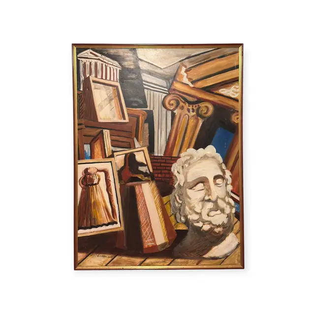
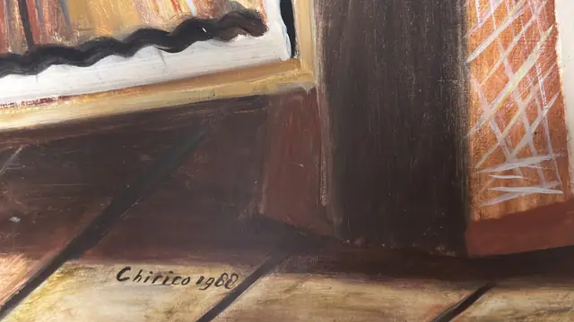
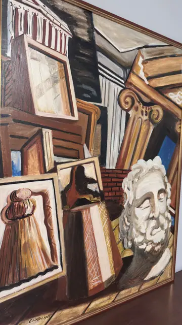
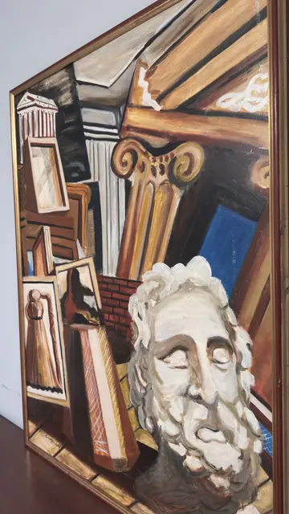

Paintings & Prints
Metaphysical Still Life with Classical Head, Chirico, Signed, Framed, 1988
Chirico · later 20th century (dated 1988 in the signature)
Price Upon Request




About the Item
Chirico. A dense metaphysical assemblage: a white plaster head with closed eyes and a curling beard sits at the right, propped among stacked canvases, a scrolled Ionic volute, a fluted column, a red-brick wall and a small painted pediment. Everything is described with firm dark contours and broad, flat brushwork in a muted range of terracotta, cream, umber and slate, punctuated by one saturated blue rectangle. Perspective is deliberately unstable, with objects tipping toward the viewer on a warm plank floor. Surface texture is visibly brushy with soft ridges where the paint is loaded. Medium: oil on canvas. Signed lower centre, on the plank floor, reading "Chirico 1988". Inscribed on the reverse or mount: Chirico 1988. Condition: No tears or losses visible; the paint film is sound with normal brush relief. Some surface sheen and glare in the raking-light shots.
Details
- Creator:
- Chirico
- Creation Year:
- later 20th century (dated 1988 in the signature)
- Dimensions:
- Height: 49.5 in (125.73 cm)
Width: 37.25 in (94.61 cm)
outside of frame - Medium:
- oil on canvas
- Period:
- 20Th
- Condition:
- Offered in the condition shown in the photographs.
- Reference Number:
- VO-161
- Documentation:
- no certificate or gallery label photographed
- Gallery Location:
- Chirico 1988